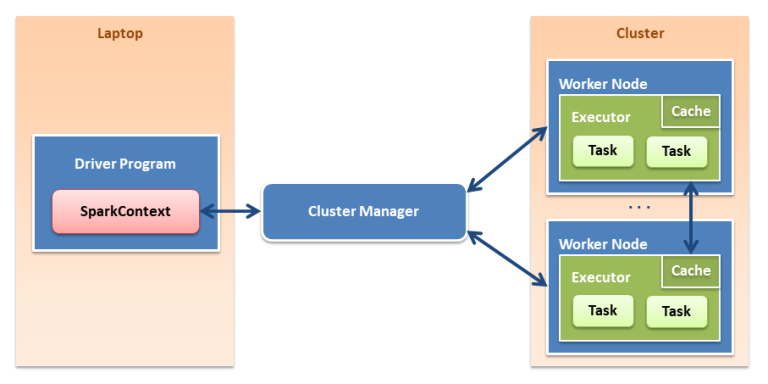

1. Fundamentos
SPARK: Sistema de computación de datos.
- Se integra a la perfección con Hadoop
- Trabaja en memoria y disco aunque su máximo rendimiento lo obtiene en memoria, hasta 100 veces más rápido
- Tiene API Java, Python, Scala, R
- Spark permite el procesamiento en casi tiempo real (mini batch)
-
RDD:
Resilient Distributed Dataset.
Son los datos distribuidos en memoria
-
Usa evaluación perezosa.
No ejecuta el código en las transformación, sólo en las acciones sobre los datos
Componentes principales.
- Spark Core: Base donde se apoyan los demás componentes
- Spark SQL: Procesamiento de datos estructurados y semi-estructurados
- Spark Streaming: Procesamineto de datos en tiempo casi real
- Spark MLlib (machine learning): Librería de Machine Learning
-
Spark GraphX: Procesamineto de grafos.
DAG: Grafo asíncrono dirigido

Arquitectura de Spark
SparkContext
Es el objeto que especifica como vamos a acceder a nuestro cluster
Es el contexto donde se crean las variables en Spark
Se instancia con la variable "sc" (no todos los entornos)
La creación de un objeto SparkContext lleva implicitamente un objeto SparkConf
SparkConf
Este objeto contien la información sobre nuestra aplicación.
Cluster Manager - Gestores de recursos.
- Standalone: Viene incluido en Spark (es muy sencillo)
- Mesos: Gestor de recursos de Spark, puede ejecutar Hadoop, Map Reduce y aplicaciones de servicio
- YARN: Gestor de recursos propio de Hadoop 2, puede ser utilizado por SPARK
Executors
Son los encargados de ejecutar las tareas o task en los nodos del cluster a petición del Cluster Manager
RDD Resilient Distributed Datasets
Conjunto de datos distribuidos en memoria donde la memoria está configurada a modo de un cluster por lo que el tratamiento de los datos se realiza de forma paralela, rápida y tolerante a fallos.
Tipos de RDD según su origen:
- Colecciones paralelizadas: basadas en colecciones de Scala
- Datasets de Hadoop: creados a partir de ficheros almacenados en HDFS.
Tipos de operaciones sobre un RDD:
- Transformaciones: Crean nuevos conjutos de datos
-
Narrow:
Las transformaciones se han de realizar mezclando distintas particiones.
filter(), sample(), map(), flatmap()
-
Wide:
Las transformaciones se realizan en la su propia partición.
groupByKey(), reduceByKey()
-
Acciones:
Devuelven el valor al driver del cluster tras realizar un computo sobre los datos.
reduce(), collect(), count(), first(), take()
2. Instalación
3 modalidades de instalación.
-
Standalone:
Spark + HDFS
-
Hadoop V1:
Spark + Map Reduce + HDFS
-
Hadoop V2:
Spark + YARN/Mesos + HDFS
Instalación de Standalone.
Se instalará a partir de una Máquina Virtual de 64bits con Ubuntu 16.04.
La máquina incluye:
- Apache Spark 2.2
- Python 3.5.2
- Jupyter Notebook
- Notebook Spark con Kernel para Python 3.5, Scala (SPylon) y R (IRKernel)
Para instalar la VM se necesita:
- Virtualbox 5.0 o superior.
- Vagrant 1.8 o superior.
Proceso de instalación.
-
Clonar o descargar la máquina Virtual, Descargar
- Abrir un terminal y situarnos dentro de la carpeta donde hayamos descomprimido la máquina virtual, dentro de la carpeta encontraremos el fichero Vagrantfile
-
Ejecutamos
vagrant up
para levantar la máquina
Esto preparará la máquina virtual y lanzará el notebook de Jupyter en el puerto 8008.
La contraseña para entrar es " vmuser "
vagrant halt pausa la VM
vagrant destroy Elimina la instalación de la VM
Editar vagrantfile para modificar la configuración de la VM
vagrant ssh para acceso a un terminal de la VM
http://localhost:8008 para acceder al notebook
http://localhost:4040/ para monitorizar los jobs lanzados en Spark
3. RDD
Los RDD son los datos que se han leido y se han particionado en los nodos del cluster que se crea en la memoria
Los orígenes de los datos pueden ser diversos pero una fuente de datos muy común es HDFS
Contra los RDD se pueden lanzar:
- Transformaciones: Crea un nuevo RDD a partir de otro existente
- Acciones: Genera un valor que es mandado al driver
Transformaciones:
- map
- filter
- flatMap
- union
- intersection
- distinct
- groupByKey
- reduceByKey
- sortByKey
- join
- cogroup
- coalesce
Acciones:
- reduce
- collect
- count
- first
- take
- saveAsTextFile
- max, min...
- countByKey
- foreach
Creación de RDDs:
//importamos SparkConf, SparkContext, RDD
import org.apache.spark.SparkConf
import org.apache.spark.SparkContext
import org.apache.spark.rdd.RDD
//comprobamos que se ha creado el objeto SparkContext
sc
//se obtiene la configuración actual de SparkConf
sc.getConf.getAll
//creación de un array
val cadenas = Array("spark", "hadoop", "hdfs", "spark", "hdfs")
//creación del primer RDD mediante parallelize.
//indicar cantidad de nodos para paralelizar los datos.
val cadenasRDD = sc.parallelize(cadenas, 3)
//Petición de contenido con collect()
//Especial cuidad de llamar a collect() con RDD muy grandes.
cadenasRDD.collect()
//declaración de RDD junto con Array.
val numerosRDD = sc.parallelize(Array(1,2,3,4,5,6,7,8,9), 3)
numerosRDD.collect()
//crear un RDD a partir de leer fichero desde windows
val file =sc.textFile("./documentos/texto.txt")
file.collect()
//filtrado de datos, filtra la línea que contenga la palabra Spark
val filtro = file.filter(line => line.contains("perro"))
filtro.collect()
//devolver sólo el primer elemento
file.first()
4. Transformaciones
//importamos SparkConf, SparkContext, RDD
import org.apache.spark.SparkConf
import org.apache.spark.SparkContext
import org.apache.spark.rdd.RDD
//creación de un array
val cadenas = Array("spark", "hadoop", "hdfs", "spark", "hdfs")
//paralelización del RDD cadenas
val cadenasRDD = sc.parallelize(cadenas, 3)
Funciones de transformación.
map():
Aplica una función a cada elemento del RDD.
//convertir a mayúsculas cada palabra
//la función se leería: Para cada palabra aplicar función toUpperCase()
val cadenasMayusculas = cadenasRDD.map(palabra => palabra.toUpperCase())
cadenasMayusculas.collect()
filter(): Filtra cada palabra igual a la cadena.
val data = cadenasMayusculas.filter(p => p.contains("ARK"))
data.collect()
flatMap(): Aplica una función a cada elemento y devuelve una única lista.
val mayusculas = cadenasRDD.flatMap(p => p.toUpperCase())
mayusculas.collect()
val mayusLength = cadenasRDD.flatMap(p => List(p.toUpperCase(), p.length))
mayusLength.collect()
union(): une RDDs.
val cadenasBoth = cadenasRDD.union(cadenasMayusculas)
cadenasBoth.collect()
distinct(): elimina valores repetidos.
cadenasBoth.distinct().collect()
groupByKey(): Agrupa por cada key única los valor.
//se crea un RDD de pares clave valor.
val parCV = cadenasRDD.map(p => (p,1))
parCV.collect
//se aplica groupByKey donde se realiza un agregado de claves por cada valor único
val group = parCV.groupByKey()
group.collect()
reduceByKey(): Realiza una agrupación por clave única y reduce los valores de cada clave.
//(_+_) indica sumar todos los valores
//(_+_) se puede expresar también como ((a,b) => a+b)
val suma = parCV.reduceByKey(_ + _)
suma.collect()
sortByKey(): Ordena por clave. true: orden ascendente false: orden descendente
parCV.sortByKey(false).collect()
crear una función para pasarla a un map:
//se crea la función con parámetro de entrada string y devuelve un string y un entero.
def tamanyo(s : String) : (String, Int) = {
return(s, s.length());
}
cadenasRDD.map(tamanyo(_)).collect()
5. Acciones
//importamos SparkConf, SparkContext, RDD
import org.apache.spark.SparkConf
import org.apache.spark.SparkContext
import org.apache.spark.rdd.RDD
//creación de un array
val cadenas = Array("spark", "hadoop", "hdfs", "spark", "hdfs")
//paralelización del RDD cadenas
val cadenasRDD = sc.parallelize(cadenas, 3)
//declaración y paralelización de RDD
val numerosRDD = sc.parallelize(Array(1,2,3,4,5,6,7,8,9), 3)
colect() muestra el contenido de un RDD contenido
cadenasRDD.collect()
first() devuelve el primer elemento de un RDD
cadenasRDD.first()
count() devuelve el número de elemento de un RDD
cadenasRDD.count() + numerosRDD.count()
reduce() Aplica una acción a todos los elementos del RDD y devuelve un único elemento
//aplicar reduce con la suma de los elementos contenidos en numerosRDD
numerosRDD.reduce(_+_)
take() devuelve n primeros elementos del RDD
numerosRDD.take(3)
max() devuelve el número máximo de entre los elementos del RDD min() devuelve el número mínimo de entre los elementos del RDD
numerosRDD.max()
countByKey() devuelve el conteo de valores para cada única clave
//se crea un RDD de pares clave valor.
val parCV = cadenasRDD.map(p => (p,1))
parCV.collect()
parCV.countByKey()
foreach() aplicar una acción por cada elemento del RDD
cadenasRDD.foreach(p => println("La palabra es " + p))
6. Persistencia y acumuladores
Spark tiene evaluación perezosa.
Puede ser necesario utilizar un RDD varias veces y para evitar el coste de tener que recalcular continuamente el RDD se utiliza la persistencia.
Cuando se persiste un dato cada nodo es el responsable de almacenar internamente su parte.
Si un nodo con datos persistentes falla, Spark recalcula las particiones perdidas cuando sea necesario.
Existen varios niveles de persistencia pudiendo especificar que Spark serialice o no los datos en disco, memoria o una combinación de ambas.
-
Tipos de persistencia
- MEMORY_ONLY : Sólo memoria
- MEMORY_AND_DISK : Memoria y disco
- MEMORY_AND_DISK_SER : Memoria y disco serializado
- DISK_ONLY : Sólo disco
- MEMORY_ONLY_SER : Sólo memoria serializada
- MEMORY_ONLY_2 : Sólo memoria (versión mejorada)
Si la persistencia de datos excede la memoria disponible Spark despreciará automáticamente las particiones más antíguas.
//importamos SparkConf, SparkContext, RDD, nivel de persistencia
import org.apache.spark.SparkConf
import org.apache.spark.SparkContext
import org.apache.spark.rdd.RDD
import org.apache.spark.storage.StorageLevel
val fileMemory = sc.textFile("./documentos/persistenciaFile")
//persistencia de los datos en memoria
fileMemory.persist(StorageLevel.MEMORY_ONLY)
//se pone a prueba el tiempo de cálculo con los datos persistidos en memoria.
//variable tiempo de inicio.
val timestampInicio: Long = System.currentTimeMillis
//filtrado de palabras con tamaño mayor que 6.
val mayor6 = fileMemory.flatMap(x => x.split(" "))
.filter(p => p.length > 6)
//se realiza una acción para obligar a realizar el cálculo.
mayor6.count()
//variable tiempo final
val timestampFin: Long = System.currentTimeMillis
println(" Tiempo " + (timestampFin - timestampInicio))
//se elimina la persistencia actual
fileMemory.unpersist()
//creación de un acumulable de tipo long.
val accum = sc.longAccumulator("NumPalabras")
//para cada palabra en mayor6 suma 1. (vendría a ser como un count())
mayor6.foreach(p => accum.add(1))
//consulta del valor acumulado (la variable es de tipo global)
//este valor también se puede consultar desde los jobs de Spark, localhost:4040/jobs
accum.value
7. Dataframe - Datasets
Datasets
Dataset: Colección de datos con estructura.
- Poseen los beneficios de los RDD
- Evaluación perezosa
- API para Scala y Java
Dataframe
Dataframe: Colección de datos con estructura organizado en columnas.
SparkSession
SparkSession: Se utilizan para crear dataset y dataframe al igual que se utiliza SparkContext para crear RDD .
//creación de SparkSession val spark = SparkSession.builder()
import org.apache.spark.sql.SparkSession
//creación de una SparkSession incluyendo algunas configuraciones.
// appName: Nombre de la Aplicación
// master: maquina donde se va a ejecutar
// getOrCreate: Si existe devuelve sesión anterior sino crea una nueva.
val spark = SparkSession.builder.appName("miApp").master("local").getOrCreate()
//leer fichero json y convertirlo en dataframe
val characters = spark.read.json("./documentos/strangersCharacters.json")
//show(): mostrar el contenido del dataframe
characters.show()
//ver la estructura del dataframe
characters.columns
//imprimir el schema
characters.printSchema
//seleccionar columnas
val nombres = characters.select("nombre", "edad")
nombres.show()
//filtrar personajes con edad menor a 15 años
//$ selecciona la columna
val children = characters.filter($"edad" < 15)
children.show()
// primer elemento
children.first()
//los 5 primeros elementos
children.head(5)
//contar elementos
children.count()
//agrupar por edad
characters.groupBy("edad").count().show()
//discribe inspecciona los resultados
characters.describe().show()
import org.apache.spark.sql.SparkSession
val spark = SparkSession.builder.appName("miApp").master("local").getOrCreate()
//Carga de fichero en RDD invocando a SparkContext
val sc = spark.sparkContext
val text = sc.textFile("documentos/strangersCharacters.txt")
//se crea la clase personaje para posteriormente asignarselo a text.
case class Personaje(nombre: String, edad: Long, sexo: String)
//Siempre que se trabaje con dataset se ha de importar spark.implicits._
import spark.implicits._
//se importa Row para trabajar con filas.
import org.apache.spark.sql.Row
//separación de palabras por comas.
val partes = text.map(_.split(","))
partes.collect()
//convertir partes a objeto de tipo personajes.
//con la función map se recorre cada uno de los arrays y se crea una clase personaje.
//con trim se eliminan los espacios por delante y por detrás.
val personajes = partes.map(atr => Personaje(atr(0), atr(1).trim.toInt, atr(2))).toDS()
//filtrar datos por edad
personajes.where($"edad" >13)
//personaje con la máxima edad
personajes.agg(max($"edad"))
//seleccionar los 5 primeros personajes en formato lista.
personajes.takeAsList(5)
//pasar de dataset a dataframe
val personajesDF = personajes.toDF("nombre", "edad", "sexo")
//pasar de dataset a RDD
personajes.rdd
//volcar el contenido de dataset a fichero
val nombreEdad = personajesDF.select("nombre","edad")
//guardado en formato parquet
nombreEdad.write.save("/Ejercicios/documentos/personajesParquet")
//guardado en formato json
nombreEdad.write.save.json("/Ejercicios/documentos/personajesJSON")
8. Vistas
- Las Vistas permiten lanzar consultas SQL sobre los DataFrame
- Existen Vistas Temporales y Globales
Vistas Temporales:
- Disponible únicamente en la sesión donde se crea.
- Se ha de asignar un nombre a la Vista que será el nombre de la tabla
df.createOrReplaceTempview("nombre")
Vistas Globales:
- Disponible en nuevas sesiones.
- Se consulta añadiendo global_temp antes del nombre
df.createOrReplaceTempview("people")
spark.sql("SELECT * FROM global_temp.people")
// carga de fichero
val tweetJson = spark.read.json("./documentos/large-17-json")
// crear Vista
tweetJson.createOrReplaceTempView("tweets")
val usuarios = spark.sql("SELECT user.screen_name FROM tweets WHERE user.followers_count > 300000")
usuarios.show()
// buscar tweets en español con mayor número de hashtags
val tweetsSpanish = spark.sql("SELECT created_at, user.name, entities.hashtags.text FROM tweets WHERE lang = 'es' AND size(entities.hashtags.text) > 0");
tweetsSpanish.show()
// se crea una nueva sesión
val spark2 = spark.newSession()
tweetJson.createOrReplaceGlobalTempView("tweets_global")
spark2.sql("SELECT * FROM global_temp.tweets_global")